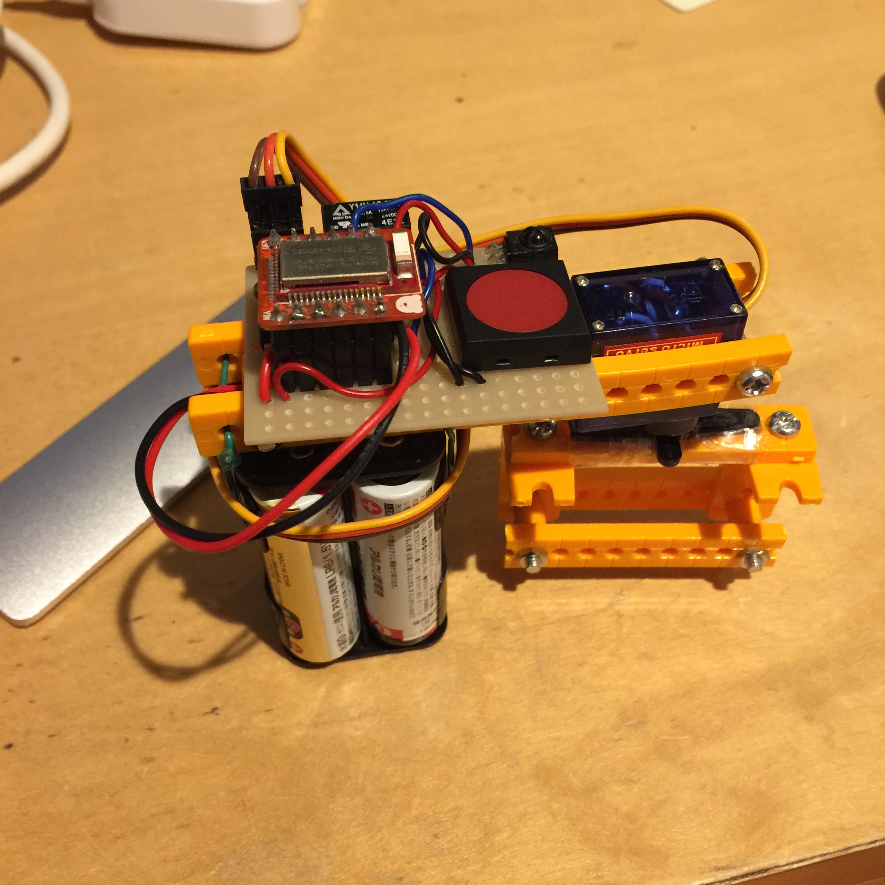

NEWS
2016/5/8
【重要】firmware2.0.3をリリースしました。
firmware2.0.2にペアリング時のバグがあり、正常にペアリングされない場合がありました。
firmware2.0.2をお使いの方は2.0.3にアップデートをお願いいたします。
firmware2.0.2をお使いの方は2.0.3にアップデートをお願いいたします。
2016/5/6 各種パラメータ調整を行ったfirmware2.0.2をリリースしました。
2016/5/2
稀にiOSアプリが強制終了するバグを修正したバージョンをリリースしました。
2016/3/18 自動開錠の精度をさらに向上させたバージョンを公開しました！
2016/3/9 Ladybug Version2公開しました！
2016/2/29 Ladybug Version2もうすぐ公開！
大幅に機能を追加しました。
主な追加機能は、履歴表示対応、鍵のシェア、オートロック、リモコンで開錠、自動開錠の精度向上です。
公開されるまでしばらくお待ちください。
主な追加機能は、履歴表示対応、鍵のシェア、オートロック、リモコンで開錠、自動開錠の精度向上です。
公開されるまでしばらくお待ちください。
Ladybugとは？
Ladybugとは一般に販売されている材料で自作するスマートロック（アプリで家の鍵を施錠・解錠する機器）です。

アプリケーション

作り方
材料と作り方は こちら をご覧ください。